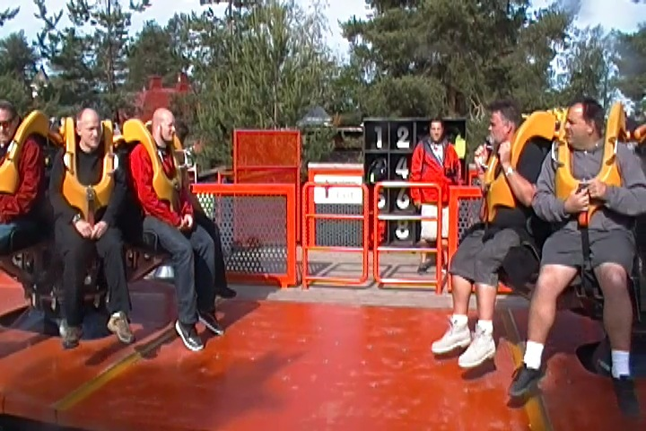
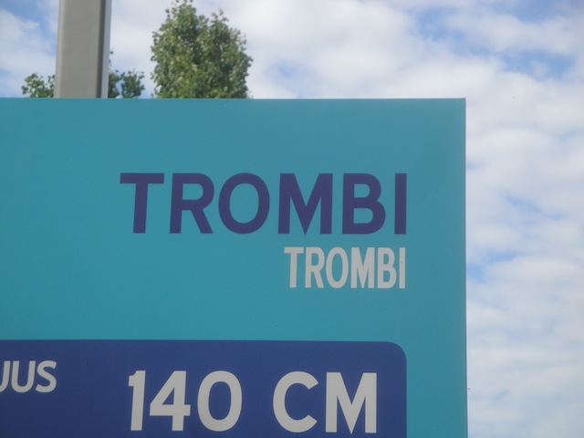
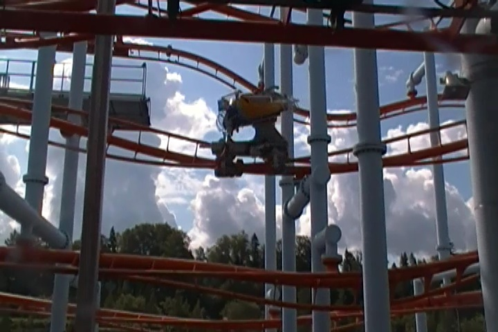
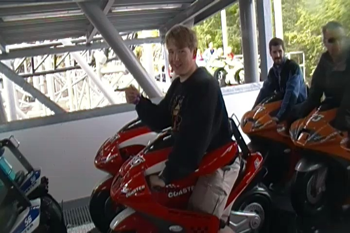
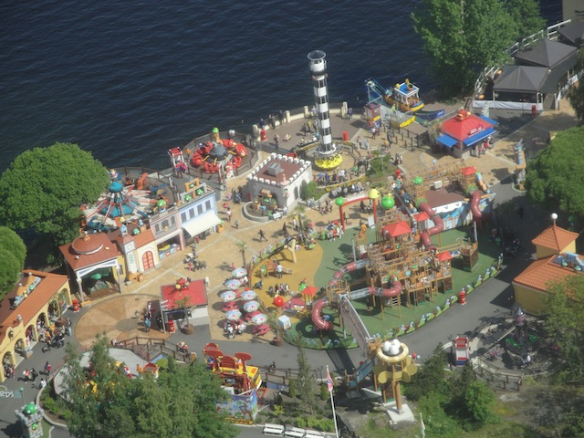

| |
TPR's Scandinavia Trip
Copenhagen Sommerland Sjaelland Bakken Tivoli Gardens Bon Bon Land
Hansa Park Legoland Billund Djurs Sommerland
Tivoli Friheden Farup Sommerland Tusenfryd Liseberg Skara Sommerland
Grona Lund
Power Park
Sarkanemmi
Linnemaki
 All right. Time for our next park, and today, we're off at Sarkanniemi.
All right. Time for our next park, and today, we're off at Sarkanniemi.
 Sarkanniemi is a very intersting park to say the least. It's got a lot of fun rides, and other cool activities, and just has this atmosphere that most American parks don't quite have.
Sarkanniemi is a very intersting park to say the least. It's got a lot of fun rides, and other cool activities, and just has this atmosphere that most American parks don't quite have.
Let's start this morning out with some ERT on Tornado.
 Tornado is a very interesting ride as it's one of only two Intamin Non-Launched Inverted coasters in the world, and yeah. It's a really fun ride.
Tornado is a very interesting ride as it's one of only two Intamin Non-Launched Inverted coasters in the world, and yeah. It's a really fun ride.
It's got a mild rattle and the inversions are fun and all, but what really makes this ride great are...
The inline twists. These things are awesome. They've got a ton of hangtime.
 And I'm not even bringing up the inline twist through the station. Yes, this element exists and it is AWESOME!!!
And I'm not even bringing up the inline twist through the station. Yes, this element exists and it is AWESOME!!!
 Kind of bummed that Intamin didn't make more rides like this as it's a really fun experience.
Kind of bummed that Intamin didn't make more rides like this as it's a really fun experience.
All right. We now move on to ERT on Half Pipe.

After riding two of these things now (Should've been my third. Stupid Elitch Gardens), I can safely say that these are really fun rides.
I particuarlly liked the running while riding gag that some of us came up with.
 Again, I really wish more Half Pipes were built considering how enjoyable these rides are.
Again, I really wish more Half Pipes were built considering how enjoyable these rides are.
"Hey look. I'm so famous that they put me in their Speed Boat ad."

All right. Let's get the low capacity Zamperla Volare out of the way.
Hey, I've always said to be a fan of the Volares and I really enjoyed the other two I rode, so hopefully, this one will be just as good.

Sadly, this was my least favorite of the 3 Volares I've ridden. Now don't get me wrong. It's not HORRENDOUS and I still don't think it's as bad as people claim, but this one definetly felt clunky and was easily the roughest one.
Moving onto MotoGee.

Check me out and my motorcycle. On foreword!!!
It was fun, considering how it was a Steeplechase clone, however, you know that leg sheild used to theme it to a motorcycle, yeah. Those are REALLY annoying and make the other Motorbike Coasters MUCH beter.
Just one last credit left to get, and then we're all good.
You know all the coaster enthusiasts are at the park when the longest line is for the kiddy coaster. =)
Cha-Ching.
 "Hey. This wasn't just any kiddy coaster. This kiddy coaster was my 400th coaster!! Pity me!!!"
"Hey. This wasn't just any kiddy coaster. This kiddy coaster was my 400th coaster!! Pity me!!!"
 The kiddy credit is located in the brand new Angry Birds land, which I must admit, does look good.
The kiddy credit is located in the brand new Angry Birds land, which I must admit, does look good.
Kind of weird that they'd theme a kids area to suicide bombing birds, but hey, I have no problem with dark kids areas. =)
I may not be the biggest Angry Birds fan, but it's much better than what they could've themed this area to.
 Those are some weird looking pigs.
Those are some weird looking pigs.
Please don't feed the terrorists. Thank you.
Moving onto lunch, todays lunch was just pizza. Hey, I'm always down for pizza.
I have no idea what brand of sodas these were, but they're awesome. I looked up what Virvoitusjuoma was and it turns out to just be Finnish for Soft Drink. This doesn't help me at all!!! Is this just custom Sarkanniemi Soda, cause it looks like it from the Sarkanniemi logo. All I know is that I am a fan.
Up next,the park's Dolphin Show, which was perhaps the strangest show I've ever seen at any park. It was very Cirque due Solaeish, the relationship between the trainers and dolphins almost seemed romantic, and they performed to Elton John's version of the Circle of Life from the Lion King. Uh...weird.
Nants ingonyama bagithi Baba. Sithi uhm ingonyama
 Moving up into the Nasinneula Tower.
Moving up into the Nasinneula Tower.
Yeah. It's a fast elevator ride to the top. Some people even complain of ears popping. I wish it was that fast.
 And yeah. This is exactly why we came up here. Photography shots.
And yeah. This is exactly why we came up here. Photography shots.
I especially love these ariel shots of Tornado.
 Really, the only work that Tornado needs is a visit from Rainbow Brite. And hell, that's already halfway done with it's DayGlo Trains.
Really, the only work that Tornado needs is a visit from Rainbow Brite. And hell, that's already halfway done with it's DayGlo Trains.
 WEE!!! INLINE TWIST!!!
WEE!!! INLINE TWIST!!!
 Bah, the Volare isn't THAT bad. Quit your bitching.
Bah, the Volare isn't THAT bad. Quit your bitching.

Here's a more complete look at the Angry Birds Land.
We are deeply saddened to report on the horrors of Turtle Tipping here at Sarkanemmi.
 We decided to take a visit on their Planetarium 3D Simulator.
We decided to take a visit on their Planetarium 3D Simulator.
And sorry, this sucks. Those with no interest in Astronomy at all fell asleep and I was just face-palming at how absurd and stupid it all was. Unless you wanna laugh at the concept of Sarkanemmi on the moon, Thumbs down.
Oh, and here's a quick rainstorm just to remind you that you are in Scandinavia.
The battle of man vs machine continues.
 After seeing that they had Jet Boating here, I HAD to do it!!! I don't even care that it's an upcharge!!
After seeing that they had Jet Boating here, I HAD to do it!!! I don't even care that it's an upcharge!!
Last time I went Jet Boating was in 2008 in the Montreal River during the North of the Border Trip (Really wish I mentioned it in the update). So I was WAY overdue for another Jet Boating session. And yeah. Totally worth it.
Yeah. That lake water suddenly doesn't look pretty when it's splashing all over you.
 Hey, this may not be the most intense flat ride ever, but at least it was fun and unique.
Hey, this may not be the most intense flat ride ever, but at least it was fun and unique.
I love the floating faucet fountain.
I just had to get another ride on Tornado while I was here.
We had to take shelter in the kids area and wait out the 2nd Rainstorm.
How the hell did that house not collapse from all of Fatass Stan's weight standing on top of it?
Well, we made it back to our hotel in Helsinki.
Well, the sun will still be out for another 5 hours. Let's grab dinner and head on out.
Quick word of caution to anyone planning on eating at Pizza Hut in Helsinki. A side of garlic bread only comes with 2 slices, which is a problem when 3 people are eating out.
Linnemaki
Home
|